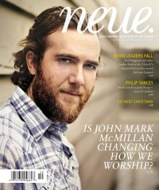

CMnexus
: Contemporary Christian culture, music, and media.
|
John Mark McMillanOn the cover
Fall 2010
Neue | Media coverage:- Sep 2007 in CCM "Artful Independence Part 1: John Mark McMillan", by Matt Conner
- Jul 2008 in Christian Single "Spotlight: Finding The Words", by Jewly Hight
- Jul 2010 in Relevant "Exploring A New Language For Worship", by Kevin Selders
- Fall 2010 in Neue "John Mark McMillan Might Just Be Changing the Language of Worship", by Josh Lujan Loveless
- May 2011 in Relevant "What's The Point of Worship?", by Bonnie McMaken, Trevor McMaken
- Nov 2011 in CCM Digital "The Economy Class", by Matt Conner
- Dec 2011 in HM "John Mark McMillan", by Rob Shameless
- 15 Feb 2014 in CCM Digital "Beyond Borders", by Matt Conner
- Mar 2014 in HM "Music by the People, for the People: John Mark McMillan Takes Residency in Borderlands", by Chelc Eaves
- May 2014 in Relevant "The Drop: Profile: On Authentic Worship and Music's Impact"
- Sep 2014 in Worship Leader "Table Talk: John Mark McMillan", by Andrea Hunter
- Jan 2016 in Relevant "The Drop: Conversation: John Mark McMillan"
- Nov 2017 in Relevant "Inside the crisis of faith that lead the singer to question how to worship in the first place", by Matt Adkins
Albums & reviews:2005: The Song Inside the Sounds of Breaking Down
2014: The Borderland Sessions
2017: Mercury & Lightning
2020: Basement Sessions Volume 1 - EP
2020: Stabal Session (Live)
2020: Peopled With Dreams
2020: Basement Sessions Volume 2 - EP
2023: Deep Magic
Award Summary (Nominations / Wins)
Dove Awards2014 Dove Awards- Worship Song: "Future/Past"
2015 Dove Awards- Rock/Contemporary Album: The Borderland Sessions
2020 Dove Awards |
|